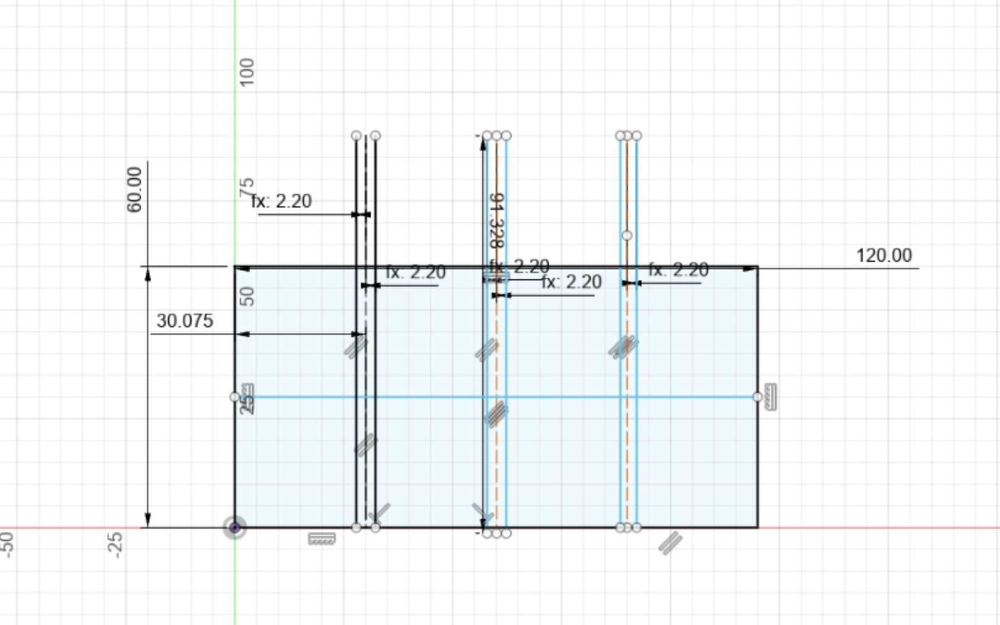
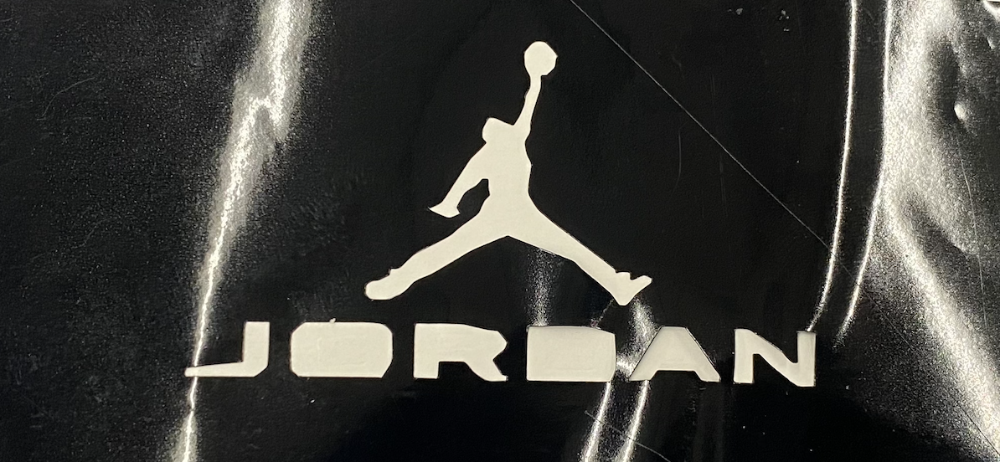

<br>
#### Week 2:2D Design and Cutting
This last week, I learned about cutting and 2D design. I used vinyl cutting, laser cutting, and computer-aided design software called Fusion 360. Since it was my first time using Fusion 360, I must admit that I initially felt a little overwhelmed by all of its many features. However, I was able to adjust fast. The major task for this week was to create press-fit cardboard object using laser cutting; however, adhesive was strictly prohibited.
So I choose to create a simple yet distinctive design with Fusion 360. I began with a square, to which I added three additional, 2.0 mm wide, vertical rectangles. After creating my drawing in Fusion360, I exported it as a DXF file, sent it to the laser cutter, and then extruded it into 3D using 2D projection. The only issue I encountered when using the laser cutter to cut it out was that my vertical rectangle wasn't wide enough to allow it to move up and down. To fix this problem I expand my vertical rectangle to 2.2mm and it came out perfect.

<!---->


<!--! <p>I thought it would be a good idea to sketch out the circuit on my iPad because I wasn't sure where to begin. I originally intended to complete my project with just an Arduino and a motor, but I felt that would be boring. So, to add some pizzazz, I added an LED and other nice components to my circuit to get more practice utilizing them. </p> -->
<h2>Vinyl Cutter</h2>
<div class="container">
<div class="row">
<div class="col-4">
<p>I also use vinyl cutting. A vinyl cutter is an easy-to-use device that can create banners, stickers, and even signs. To use the vinyl cutter, I just had to make a grayscale or black & white PNG bitmap image. I decided to create a png bitmap of a Jordan sign. I download my file or image from here, save it to a hard drive, and then open it in the desktop computer to which the vinyl cutter was attached. I just modified the scale after that, pushed calculate, and it printed.
The material I use included:
<ul>
<li>A png bitmap </li>
<li>hard drive </li>
<!--!<li>1 100hz Resistor </li>
<li>Micro Sero </li>
<li>L9110 </li>
<li>Motor </li>
<li>Cable cords </li>-->
</ul> </p>
</div>
<div class="col-8 text-center">

</div>
</div>
</div>
<!-- I also use vinyl cutting. A vinyl cutter is an easy-to-use device that can create banners, stickers, and even signs. To use the vinyl cutter, I just had to make a grayscale or black & white PNG bitmap image. I decided to create a png bitmap of a Jordan sign. I download my file or image from here, save it to a hard drive, and then open it in the desktop computer to which the vinyl cutter was attached. I just modified the scale after that, pushed calculate, and it printed.
-->

<h2>Household objects</h2>
<div class="container">
<div class="row">
<div class="col-4">
<p> We also had to select 2 household objects and make them in Fusion 360. I choose to make a usb c to usb adapter case and a flower pot.
The material I use included:
<ul>
The flower pot was much simpler to construct in Fusion 360 than I had expected. I first drew a straightforward sketch of the flower pot's side. The sketch was then make into 3D using the extrude feature. Then I proceed to modify it a little more by choosing shell feature. I choose the plane I want to place it on after that I sepecify the diameter and height. The pot's wall width is defined once I choose the top face.
</ul> </p>
</div>
<div class="col-8 text-center">
</div>
</div>
</div>
We also had to select 2 household objects and make them in Fusion 360. I choose to make a usb c to usb adapter case and a flower pot.
The flower pot was much simpler to construct in Fusion 360 than I had expected. I first drew a straightforward sketch of the flower pot's side. The sketch was then make into 3D using the extrude feature. Then I proceed to modify it a little more by choosing shell feature. I choose the plane I want to place it on after that I sepecify the diameter and height. The pot's wall width is defined once I choose the top face.